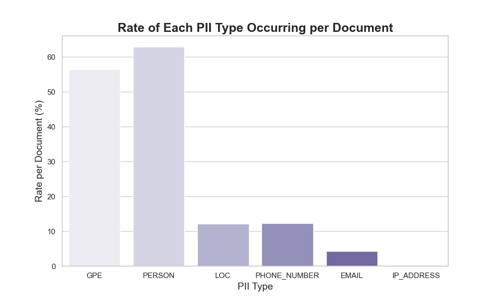
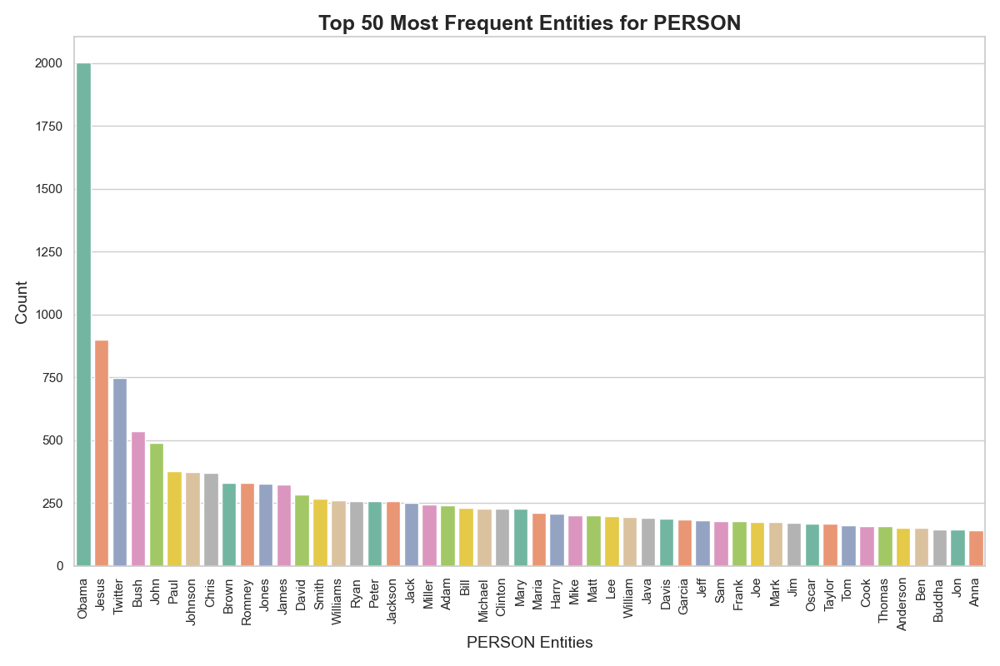

title: Privacy Leakage in Large Language Models date: 2024-10-07 authors:
name: Terry Taiming Lu
Abstract#
Large language models (LLMs) trained on vast, often sensitive datasets can inadvertently memorize and expose private information. This study investigates how specific conditions—such as entity frequency and data repetition—contribute to privacy leakage when LLMs generate text. Using a representative web dataset, we identify the presence of personal names, geopolitical entities, and IP addresses that appear frequently and risk being replicated in model outputs. Our analysis demonstrates a positive, statistically significant correlation between the frequency of certain sensitive data in training and its likelihood of appearing in generated text. These findings underscore the need for more robust privacy-preserving strategies, including differential privacy and data anonymization techniques, to safeguard sensitive information. Our work lays a foundation for understanding the inherent vulnerabilities in LLMs and guides future research toward securing models against privacy breaches.
Introduction#
Imagine a world where the very technology that powers our daily lives—answering our questions, assisting in our work, and even entertaining us—becomes a potential threat to our privacy. As large language models (LLMs) continue to evolve, trained on enormous amounts of data, including sensitive personal details, the risk of unintentional privacy leaks grows. Understanding these risks requires a closer examination of how LLMs operate and the potential vulnerabilities inherent in their design, particularly when handling sensitive information.
By processing vast amounts of sensitive data, ranging from personal consumer details to government-held records, LLMs and other deep learning systems can unintentionally expose confidential information, leading to significant financial and reputational harm. These privacy leaks pose not only a direct economic cost—such as regulatory fines, litigation expenses, and erosion of consumer trust—but also broader impacts on innovation and market efficiency.
In this paper, we investigate the mechanisms behind privacy leaks in LLMs. Specifically, we examine how training datasets, often containing personal identifiers and other sensitive information, contribute to memorization and subsequent leakage during inference. Using quantitative analysis, we explore the extent to which sensitive tokens—such as names, addresses, and network identifiers—are memorized, focusing on their frequency and distribution in the data . Our analysis demonstrates a positive correlation between data occurrence in the training corpus and its generation probability during inference. This suggests that the more frequently sensitive information appears in the training data, the higher the likelihood of it being memorized and subsequently leaked by the model.
By focusing on this correlation, we aim to provide a clear understanding of how leakage risks are amplified by certain training data characteristics. This work emphasizes the importance of careful dataset curation and privacy-preserving preprocessing techniques to minimize the potential for sensitive information exposure.
Our contribution is two-fold:
We provided quatitative analysis on privacy leakage in internal snapshots popular for training large language models.
We analyze the specific vulnerabilities within LLMs that lead to privacy leaks, providing a technical overview of how private information may be inadvertently exposed.
|## Background
Large Language Models. Large Language Models (LLMs) have emerged as transformative technologies in artificial intelligence, capable of performing various tasks such as natural language understanding, text generation, and translation [Vaswani et al., 2017, Radford et al., 2019, Raffel et al., 2020]. These models, such as GPT-3 [Brown et al., 2020] and BERT [Devlin et al., 2019], are trained on massive datasets from diverse sources, including books, articles, and websites, enabling them to generate coherent and contextually appropriate text. Their capabilities make LLMs valuable across domains such as customer service, content creation, research assistance, healthcare [Esteva et al., 2019], and legal document processing [Bommarito and Katz, 2018]. However, LLMs also present significant privacy challenges. During training, these models can inadvertently memorize sensitive or personally identifiable information, potentially exposing it during inference [Carlini et al., 2021]. Such privacy leaks have raised concerns about their use in real-world applications, where the risk of exposing confidential information could have serious legal and economic repercussions [Shokri et al., 2017, Jayaraman and Evans, 2019]. Addressing these risks requires the development of privacy-preserving techniques such as differential privacy [Abadi et al., 2016] and data anonymization, as well as robust regulatory frameworks to protect data while fostering innovation [Brundage et al., 2018].
Data Privacy and Utility in AI Models. The balance between data privacy and utility is a crucial issue, particularly in the context of large-scale AI models. Differential privacy has emerged as a popular solution to protect sensitive information in datasets, but it often introduces significant noise, leading to reduced data accuracy and economic inefficiencies [Ruggles, 2024]. This trade-off has been further examined in the context of health disparities, where privacy measures disproportionately distort data for smaller populations, raising concerns about fairness and resource allocation [Santos-Lozada et al., 2020]. Traditional statistical disclosure methods have been defended as viable alternatives, suggesting that newer techniques like differential privacy may not always offer superior protection without substantial economic costs [Muralidhar and Domingo-Ferrer, 2023]. In response, optimization frameworks have been proposed to find a middle ground, allowing for both privacy and data utility, though they require careful balancing to avoid significant losses in either area [Hotz et al., 2022]. The risks associated with privacy leakage from AI models, particularly in high-stakes sectors like healthcare and finance, underscore the need for better privacy-preserving techniques. Misuse of privacy mechanisms can lead to economic losses through reduced data reliability and non-compliance with regulations, making this a critical area for future research [Domingo-Ferrer et al., 2021].
Privacy Leakage in LLMs#
Problem Formulation#
The primary objective of this study is to investigate the potential privacy risks associated with large language models (LLMs). Specifically, we aim to understand how and under what conditions LLMs memorize sensitive information from their training data and how likely it is that such information can be exposed during inference. We focus on answering the following key questions:
To what extent do LLMs memorize sensitive information during training?
What factors influence the likelihood of privacy leakage in LLMs?
The goal is to quantify the trade-off between model utility and privacy risk, providing insight into how to train LLMs while minimizing the potential for privacy breaches.
Method#
The methodology focuses on analyzing privacy leakage risks in large language models (LLMs) by identifying correlations between the occurrence of sensitive information in training data and its likelihood of being generated during inference. The approach involves defining sensitive information patterns, evaluating token generation probabilities, and employing quantitative metrics to assess privacy risks.
Analytical Framework#
Token Generation Analysis
Identify sequences \(S = \{t_1, t_2, \ldots, t_n\}\) in the training data containing privacy-sensitive tokens.
Calculate the conditional probability \(P(t_i | t_1, \ldots, t_{i-1})\) for each token \(t_i\) in the sequence to evaluate the likelihood of generating the next token.
Aggregate these probabilities over the identified sequences to compute the overall likelihood of generating sensitive information:
\( P(\text{sensitive} | \text{context}) = \prod_{i} P(t_i | t_1, \ldots, t_{i-1}), \)
where \(t_i\) belongs to the sensitive sequence.
Correlation Analysis
Measure the frequency of sensitive data occurrences in the training dataset.
Quantify the relationship between this frequency and the likelihood of such data being generated during inference. This analysis identifies trends linking higher data occurrence to increased generation probabilities.
Quantitative Metrics
Token Generation Probability (TGP): Measures the likelihood of generating tokens associated with sensitive information during inference.
Perplexity: Evaluates how well the model predicts privacy-sensitive sequences, with lower perplexity indicating higher memorization.
Frequency Analysis: Tracks the distribution of sensitive information within the training dataset to identify high-risk categories.
Experimental Setup#
The experiments were conducted using the FineWeb dataset [Penedo et al., 2024], a high-quality web-based corpus, alongside synthetic data containing intentionally generated sensitive information. The following steps outline the experimental setup:
Dataset Preparation#
Data Selection
The FineWeb dataset was chosen for its diverse content and relevance to real-world applications. It includes web snapshots, organizational documents, and other text sources.
Synthetic data was generated to include randomized sensitive information, such as names, addresses, and network identifiers, to test the model’s handling of privacy-sensitive inputs.
Data Preprocessing
Filtering Sensitive Content: Using regular expressions, documents containing PII (e.g., names, addresses, IP addresses) were extracted.
Metadata Extraction: Timestamp and contextual metadata were included for additional analysis.
Tokenization: Data was tokenized using GPT-4’s tokenizer to ensure compatibility with the model.
Model Evaluation#
Token Generation Analysis
The model was prompted with contexts derived from the training data containing sensitive sequences.
Conditional probabilities \(P(t_i | t_1, \ldots, t_{i-1})\) were calculated for tokens within privacy-sensitive sequences.
The frequency of generating sensitive tokens in different contexts was recorded.
Quantitative Assessment
Metrics such as Token Generation Probability (TGP) and perplexity were used to evaluate the model’s behavior on privacy-sensitive data.
Correlation analysis between training data frequency and generation likelihood provided insights into the relationship between data occurrence and privacy risks.
Results#

Figure 1: PII Count by Type. This bar chart displays the total count of various types of Personally Identifiable Information (PII) detected in the dataset. The analysis highlights “PERSON” entities as the most frequent, followed by “GPE” (Geopolitical Entities), while phone numbers and email addresses appear less frequently.

Figure 2: PII Rate per Document. This plot shows the average rate of occurrence of each PII type per document in the dataset. “PERSON” and “GPE” entities are the most prevalent, occurring in over 50% of the documents, indicating significant potential privacy risks.

Figure 3: Top Entities: PERSON. This visualization lists the top 50 most frequent “PERSON” entities detected in the dataset. Names such as “Obama” and “Jesus” dominate the list, highlighting the potential for memorization of high-frequency names.

Figure 4: Top Entities: EMAIL. This chart illustrates the most frequent email addresses identified in the dataset. While some addresses appear innocuous, their frequent occurrence underscores the risk of privacy leaks involving sensitive communications.
Figure 5: Top Entities: IP Address. The most common IP addresses detected in the dataset are shown here. Both public and private IP addresses appear, with certain private addresses posing a higher risk of unintended exposure if memorized by the model.
Figure 6: Regression Analysis on Data Occurrence and Generation Probability. This scatter plot with a fitted regression line shows the relationship between the frequency of sensitive data in the training dataset and the likelihood of it being generated by the model. The positive slope indicates a statistically significant correlation, with higher frequency data being more likely to reappear in the outputs. Statistical details, such as the ( R^2 ) value and p-value, support the strength and significance of the relationship.
Analysis#
Data Privacy Leakage Distribution#
1. PII Type Distribution#
The bar chart in Figure 2 shows the total count of various PII (Personally Identifiable Information) types detected across the dataset. The data indicates that “PERSON” entities are the most frequent, followed by “GPE” (Geopolitical Entities). Other PII types such as phone numbers and email addresses have significantly lower frequencies. This distribution emphasizes the potential risk areas for privacy leakage, particularly in the context of models trained on extensive text sources that may contain personal or organizational data.
2. PII Occurrence Rate per Document#
Figure 3 presents the rate of each PII type’s occurrence per document, showcasing how prevalent each type of sensitive information is within individual documents. The analysis points out that both “PERSON” and “GPE” entities are present in over 50% of documents, making them the most common types of sensitive information. This high occurrence rate poses a notable risk for privacy exposure in model outputs.
3. Detailed Analysis of “PERSON” Entities#
Figure 4 highlights the top 50 most frequent “PERSON” entities in the dataset, with “Obama” appearing most frequently, followed by “Jesus” and other common names. This breakdown underscores the memorization risk associated with high-frequency names, which are more likely to be generated by LLMs when prompted, potentially exposing sensitive or context-specific information.
4. Analysis of “IP_ADDRESS” Entities#
Figure 5 showcases the top 50 most frequent “IP_ADDRESS” entities detected in the dataset. The results indicate a range of public and private IP addresses, with some appearing more than 15 times. Although the presence of public or commonly used IP addresses may not always pose privacy risks, the repeated appearance of certain private IP addresses or those associated with internal networks highlights a potential source of unintended privacy exposure.
Effect of Data Privacy Leakage on LLMs#
1.Regression Analysis and Statistical Significance#
The linear regression analysis provides further insights into the relationship between occurrences and generation probabilities. The fitted regression line has a slope of approximately 0.087, indicating a positive but modest increase in generation probability as occurrences rise. The intercept of approximately 0.4163 suggests that when occurrences approach zero, the baseline generation probability is slightly negative, meaning if the sample never occurs in training data, it won’t be generated.
The p-value for the slope, approximately \(9.6 \times 10^{-3}\), indicates strong statistical significance at conventional thresholds (e.g., 0.05). This result supports the hypothesis that there is a meaningful linear relationship between occurrences in training data and generation probability. The standard error of approximately 0.0000844 provides an estimate of the precision of the slope, suggesting that while there is variability, the estimate is reliable.
2. Implications of the Findings#
These results emphasize that while there is a statistically significant positive correlation between data occurrences and generation probabilities, the strength of this correlation is moderate. This aligns with the observed trend where more frequently occurring data points in the training set tend to appear more often during inference. In simple terms, the more a piece of sensitive information is repeated in the training data, the more likely the model is to remember and accidentally reveal it.
Understanding these dynamics can be crucial for evaluating the robustness and privacy implications of LLMs. For instance, an elevated generation probability for rare training examples could expose memorized content, raising concerns about the model’s handling of sensitive or proprietary information. This confirms that data leakage can trickle down to LLM behavior, where even rare or isolated data points, if memorized, can surface during inference, posing privacy risks. As highlighted in the analysis, the presence of outliers in the data suggests that LLMs might retain specific details that extend beyond their intended training distribution, leading to potential inadvertent disclosures. This underscores the importance of scrutinizing LLMs not just for overall performance but also for vulnerabilities in handling sensitive or infrequent data.
Conclusion#
This study underscores the critical need for privacy-preserving strategies in large language models (LLMs), revealing that sensitive information exists in the training data of our AI chatbot and can impact generation, making privacy-sensitive content more likely to appear. Specific entities, such as “PERSON” and “GPE,” are particularly prone to reoccurrence in outputs due to their frequency in training data, while even unique data points, like names and IP addresses, may be memorized and generated. Addressing these risks is essential for regulatory compliance, user trust, and sustainable AI development. Privacy-preserving techniques, such as differential privacy and data anonymization, can mitigate these risks, and comprehensive regulatory frameworks will be crucial to balancing privacy, data utility, and innovation, fostering responsible AI. This study provides foundational insights into privacy leaks in LLMs and emphasizes the importance of ongoing research to ensure safe and ethical AI deployment.
Bibliography#
A. Vaswani, N. Shazeer, N. Parmar, J. Uszkoreit, L. Jones, A. N. Gomez, Ł. Kaiser, and I. Polosukhin. Attention is all you need. In Advances in Neural Information Processing Systems (NeurIPS). 2017.
A. Radford, J. Wu, R. Child, D. Luan, D. Amodei, and I. Sutskever. Language models are unsupervised multitask learners. OpenAI Blog, 2019.
C. Raffel, N. Shazeer, A. Roberts, K. Lee, S. Narang, M. Matena, Y. Zhou, W. Li, and P. J. Liu. Exploring the limits of transfer learning with a unified text-to-text transformer. Journal of Machine Learning Research, 2020.
T. B. Brown, B. Mann, N. Ryder, M. Subbiah, J. Kaplan, P. Dhariwal, A. Neelakantan, P. Shyam, G. Sastry, A. Askell, S. Agarwal, A. Herbert-Voss, G. Krueger, T. Henighan, R. Child, A. Ramesh, D. M. Ziegler, J. Wu, C. Winter, C. Hesse, M. Chen, E. Sigler, M. Litwin, S. Gray, B. Chess, J. Clark, C. Berner, S. McCandlish, A. Radford, I. Sutskever, and D. Amodei. Language models are few-shot learners. In Advances in Neural Information Processing Systems (NeurIPS). 2020.
J. Devlin, M. W. Chang, K. Lee, and K. Toutanova. Bert: pre-training of deep bidirectional transformers for language understanding. In Proceedings of the 2019 Conference of the North American Chapter of the Association for Computational Linguistics (NAACL). 2019.
A. Esteva, A. Robicquet, B. Ramsundar, V. Kuleshov, M. DePristo, K. Chou, C. Cui, G. Corrado, S. Thrun, and J. Dean. A guide to deep learning in healthcare. Nature Medicine, 2019.
M. J. Bommarito and D. M. Katz. A study of artificial intelligence in legal document analysis. Journal of Artificial Intelligence Research, 2018.
N. Carlini, F. Tramer, E. Wallace, M. Jagielski, A. Herbert-Voss, K. Lee, A. Roberts, T. Brown, D. Song, U. Erlingsson, A. Oprea, and C. Raffel. Extracting training data from large language models. In USENIX Security Symposium. 2021.
R. Shokri, M. Stronati, C. Song, and V. Shmatikov. Membership inference attacks against machine learning models. In Proceedings of the 2017 IEEE Symposium on Security and Privacy. 2017.
B. Jayaraman and D. Evans. Evaluating differentially private machine learning in practice. In Proceedings of the 28th USENIX Security Symposium. 2019.
M. Abadi, A. Chu, I. Goodfellow, H. B. McMahan, I. Mironov, K. Talwar, and L. Zhang. Deep learning with differential privacy. In Proceedings of the 2016 ACM SIGSAC Conference on Computer and Communications Security. 2016.
M. Brundage, S. Avin, J. Clark, H. Toner, P. Eckersley, B. Garfinkel, A. Dafoe, P. Scharre, T. Zeitzoff, B. Filar, H. Anderson, H. Roff, R. Crootof, O. Evans, M. Page, J. Bryson, R. Yampolskiy, and D. Amodei. The malicious use of artificial intelligence: forecasting, prevention, and mitigation. arXiv preprint arXiv:1802.07228, 2018.
S. Ruggles. When privacy protection goes wrong: how and why the 2020 census confidentiality program failed. Journal of Economic Perspectives, 2024. URL: https://doi.org/10.1257/JEP.38.2.201, doi:10.1257/JEP.38.2.201.
A. R. Santos-Lozada, J. T. Howard, and A. M. Verdery. How differential privacy will affect our understanding of health disparities in the united states. Proceedings of the National Academy of Sciences, 2020. URL: https://doi.org/10.1073/PNAS.2003714117, doi:10.1073/PNAS.2003714117.
K. Muralidhar and J. Domingo-Ferrer. A rejoinder to garfinkel (2023) – legacy statistical disclosure limitation techniques for protecting 2020 decennial us census: still a viable option. Journal of Official Statistics, 2023. URL: https://doi.org/10.2478/JOS-2023-0019, doi:10.2478/JOS-2023-0019.
V. J. Hotz, C. Bollinger, T. Komarova, C. Manski, R. Moffitt, D. Nekipelov, A. J. Sojourner, and B. Spencer. Balancing data privacy and usability in the federal statistical system. Proceedings of the National Academy of Sciences, 2022. URL: https://doi.org/10.1073/PNAS.2104906119, doi:10.1073/PNAS.2104906119.
J. Domingo-Ferrer, D. Sánchez, and A. Blanco-Justicia. The limits of differential privacy (and its misuse in data release and machine learning). Communications of the ACM, 2021. URL: https://doi.org/10.1145/3433638, doi:10.1145/3433638.
Guilherme Penedo, Hynek Kydlíček, Loubna Ben allal, Anton Lozhkov, Margaret Mitchell, Colin Raffel, Leandro Von Werra, and Thomas Wolf. The fineweb datasets: decanting the web for the finest text data at scale. 2024. URL: https://arxiv.org/abs/2406.17557, arXiv:2406.17557.